에너지관리기사 (2004-09-05 기출문제)
1과목: 연소공학
1. 다음 연소 반응식 중에서 틀린 것은?
- CH4 + 2O2 → CO2 + 2H2O
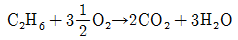
- C3H8 + 5O2 → 3CO2 + 4H2O
- C4H10 + 9O2 → 4CO2 + 5H2O
(정답률: 64%)

2. 어떤 기체연료의 고발열량이 24,160㎉/㎏이고 표준상태에 서 중량이 1.96㎏이었다. 다음 중 이 기체는?
- 메탄
- 에탄
- 프로판
- 부탄
(정답률: 39%)
3. 이론 공기량에 관한 옳은 설명은?
- 완전연소에 필요한 최소 공기량
- 완전연소에 필요한 최대 공기량
- 완전연소에 필요한 1차 공기량
- 완전연소에 필요한 2차 공기량
(정답률: 79%)
4. 풍량이 증가하면 동력이 감소하는 경향을 나타내며, 집진기에도 설치가 가능한 송풍기는?
- 다익형 송풍기
- 플레이트 송풍기
- 터보형 송풍기
- 축류형 송풍기
(정답률: 24%)
5. C중유를 사용시 그을음이 많이 나오기 때문에 원인을 체크하고 있다. 다음 방법중 틀린 것은?
- 화염이 닿고 있지 않은지 체크
- 연소실 온도가 너무 높지 않은지 체크
- 연소실 열부하가 많지 않은지 체크
- 통풍력이 부족하지 않은지 체크
(정답률: 50%)
6. 탄소 C/12 kmol을 완전연소시키는데 필요한 이론산소량은?
- 1/12 kmol
- 1kmol
- 2kmol
- 1/2kmol
(정답률: 72%)
7. 탄소 1㎏의 연소에 소요되는 이론공기량은?
- 약 5.0Nm3
- 약 7.0Nm3
- 약 9.0Nm3
- 약 11.0Nm3
(정답률: 73%)
8. 일산화탄소를 공기중에서 연소할 때 과잉공기의 양이 많을수록 연소평형 생성물은 어떻게 되는가?
- 이산화탄소의 양이 증가한다.
- 일산화탄소의 양이 증가한다.
- 일산화탄소와 이산화탄소의 양이 증가한다.
- 일산화탄소와 이산화탄소의 양이 불변한다.
(정답률: 55%)
9. 표준 상태에서 고위발열량과 저위발열량의 차이는?
- 80cal/g
- 539kcal/(g.mol)
- 9200kcal/g
- 9700cal/(g.mol)
(정답률: 59%)
10. 석탄의 분석결과 아래의 결과를 얻었다면 고정탄소분은 약 몇 % 인가?
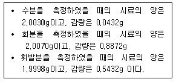
- 2.16 %
- 26.47 %
- 44.21 %
- 53.17 %
(정답률: 50%)
11. 매시간 1584kg의 석탄을 연소시켜서 11200kg/h의 증기를 발생시키는 보일러의 효율을 구하면? (단, 석탄의 발열량은 6040kcal/kg이고, 증기의 엔탈피는 742kcal/kg, 급수의 엔탈피는 23kcal/kg이다.)
- 약 10%
- 약 74%
- 약 84%
- 약 94%
(정답률: 65%)
12. 등유, 경유 등의 휘발성이 큰 연료를 접시모양의 용기에 넣어 증발 연소시키는 방식은?
- 분해연소
- 확산연소
- 분무연소
- 포트식연소
(정답률: 82%)
13. 연소가스 분석결과 CO2 농도가 CO2max 값과 같을 때 공기비(m)는?
- m = 1.0
- m = 1.1
- m = 1.2
- m = 1.4
(정답률: 71%)
14. 중유연소에 있어서 화염이 불안정하게 되는 원인이 아닌 것은?
- 물 및 기타 협잡물에 의한 분무의 단속(斷續)
- 유압의 변동
- 로내 온도가 너무 높을 때
- 연소용 공기의 과다(過多)
(정답률: 86%)
15. 다음 중 액체의 인화점에 영향을 크게 미치지 못하는 것은?
- 온도
- 압력
- 발화지연시간
- 수용액의 농도
(정답률: 71%)
16. 메탄(CH4) 32kg을 연소시킬 때 이론적으로 필요한 산소량은 몇 ㎏-㏖ 인가?
- 1
- 2
- 3
- 4
(정답률: 44%)
17. 수소 1㎏을 공기 중에서 연소시켰을 때 생성된 건폐가스(혹은 건연소(乾燃燒)가스)량은 몇 m3인가? (단, 기 중의 산소와 질소의 체적 함유비는 각 21%와 79% 이다.)
- 15.07
- 17.07
- 19.07
- 21.07
(정답률: 25%)
18. 연소장치에 따른 공기과잉계수의 대수가 옳게 표시된 것은?
- 수동 수평화격자 ＞ 산포식 스토우커 ＞ 이동화격자 스토우커
- 산포식 스토우커 ＞ 이동화격자 스토우커 ＞ 수동 수평화격자
- 이동화격자 스토우커 ＞ 수동 수평화격자 ＞ 산포식 스토우커
- 수동 수평화격자 ＞ 이동화격자 스토우커 ＞ 산포식 스토우커
(정답률: 29%)
19. 연소에서 사용되고 있는 공기비는 흔히 m으로 표시한다. 다음 중 올바른 식은?
- m= 사용 공기량/이론 공기량
- m= 이론 공기량/사용 공기량
- m= 과잉 공기량/이론 공기량
- m= 이론 공기량/과잉 공기량
(정답률: 75%)
20. 연료를 공기중에서 연소시킬 때 질소산화물에서 가장 많이 발생하는 오염 물질은?
- NO
- NO2
- N2O
- NO3
(정답률: 60%)
2과목: 열역학
21. 다음 중 상대습도(relative humidity)를 측정하기에 가장 쉬운 방법은?
- 건구온도와 습구온도를 측정한 다음 습도곡선에서 상대 습도를 읽는다.
- 건구온도와 습구온도를 측정한 다음 두 값중 큰값으로 작은 값을 나눈다.
- 건구온도와 습구온도를 측정한 다음 Moiller chart에서 읽는다.
- 대기압을 측정한 다음 습도곡선에서 읽는다.
(정답률: 77%)
22. 랭킨(Rankine) 사이클에 대한 설명이다. 틀린 것은?
- 랭킨 사이클에도 단점이 존재한다.
- 카르노 사이클(Carnot cycle) 보다 효율이 낮다.
- Reheat cycle의 단점을 개선한 cycle이다.
- 포화수증기를 생산하는 사이클이다.
(정답률: 62%)
23. 프로판(C3H8) 10㎏의 표준상태에서의 체적은 약 얼마가 되는가?
- 5m3
- 10m3
- 15m3
- 20m3
(정답률: 29%)
24. 다음 중 랭킨(Rankine) 싸이클과 관계되는 것은?
- 가스 터빈
- 증기 원동소
- carnot 열 기관
- 가솔린 기관
(정답률: 65%)
25. 냉장고가 저온에서 400kcal/h의 열을 흡수, 고온체에 560kcal/h의 비율로 열을 방출한다. 이 냉장고의 성능계수(C.O.P)는?
- 0.5
- 1.5
- 2.5
- 20
(정답률: 75%)
26. 20[℃], 5[atm]의 공기가 들어있는 2[m3] 체적인 탱크가있다. 탱크속의 공기 압력을 일정하게 유지하면서 온도40[℃]가 되도록 하려면 몇 [㎏]의 공기를 밖으로 내보내야 하는가?
- 1.14
- 11.67
- 0.99
- 0.77
(정답률: 28%)
27. 분자량이 16, 28, 32 및 44인 이상기체를 각각 같은 용적으로 혼합하였다. 이 혼합 가스의 평균 분자량은 얼마인가?
- 33
- 35
- 30
- 40
(정답률: 60%)
28. 그림은 물의 압력대 온도 도면(p-T diagram)을 나타낸 것이다. 곡선
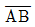
는 승화곡선,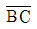
는 증발곡선,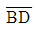
는 용융 곡선일 때 점Ｂ는?- 임계점
- 삼중점
- 승화점
- 용융점
(정답률: 43%)
29. 동일한 압력하에서 포화수, 건포화증기의 비체적을 각각 v′, v″ 로 하고, 건도 x의 습증기의 비체적을 vx로 할때 건도 x는 어떻게 표시되는가?
- x =v″ - v′/vx + v′
- x =vx + v′/v″ - v′
- x =v″ - v′/vx - v′
- x =vx - v′/v″ - v′
(정답률: 64%)
30. 그림은 어떤 순환 공정에 대한 것인가?
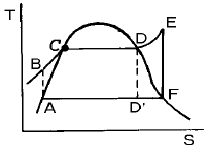
- 디젤 순환
- 냉동 순환
- otto 순환
- 과열된 Rankine 순환
(정답률: 64%)
31. 압력이 10[㎏/cm2]인 증기의 엔트로피가 1.2[㎉/㎏.K]일 때 이 증기의 엔탈피는 몇 [㎉/㎏]인가? (단, 압력기준의 S′ = 0.5086, S″ = 1.5745[㎉/㎏.K]이고 h′ = 181.19, h″ = 663.2[㎉/㎏]이다.)
- 429
- 457
- 463
- 494
(정답률: 20%)
32. 다음 중 종량성질(:시량특성치,extensive property)은?
- 체적
- 조성
- 압력
- 절대온도
(정답률: 74%)
33. 이상기체(Cp = 7J/mol.k, Cv = 5J/mol.k)가 단열 가역적으로 P1 = 10atm, V1 = 600L로 부터 P2 = 1atm로 변한다. 이 과정에 대한 일(W)과 열량(Q)을 계산하면?
- W = 0 cal, Q = 1.7×105 cal
- W = 1.7×105 cal, Q = 1.7×105 cal
- W = 1.7×105 cal, Q = 0 cal
- W = 0 cal, Q = 0 cal
(정답률: 47%)
34. 카르노(Carnot) 냉동사이클의 설명 중에서 틀린 것은?
- 이상적으로 가장 효율이 높다.
- 실제적이며 효율이 높다.
- 카르노(Carnot) 열기관 사이클의 역이다.
- 모든 냉동사이클의 기준이 된다.
(정답률: 60%)
35. 임계점(critical point)을 초과한 수증기의 성질을 설명한 것 중에서 틀린 것은?
- 임계온도 이상에서도 압력이 충분히 높으면 액화된다.
- 임계온도 보다 높은 온도에서는 액화될 수 없다.
- 임계압력 이상이라도 온도가 낮으면 액화된다.
- 임계압력 이하에서는 온도가 낮으면 액화된다.
(정답률: 62%)
36. 가스터빈 사이클(Gas turbine cycle)의 이상적인 사이클은?
- Ericsson cycle
- Brayton cycle
- Alkinson cycle
- Stirling cycle
(정답률: 23%)
37. 0[℃]의 물 1톤을 24시간 동안에 0[℃]의 얼음으로 냉각하는 능력은 몇 [㎉/h]인가? (단, 얼음의 융해열은 79.68[㎉/㎏]이다.)
- 3240
- 2340
- 3320
- 2330
(정답률: 62%)
38. 포화증기를 단열압축시켰을 때의 설명으로 맞는 것은?
- 압력과 온도가 올라가며 과열증기가 된다.
- 압력은 올라가고 온도는 떨어져서 압축 액체가 된다.
- 온도는 불변이며 압력은 올라간다.
- 압력과 온도 모두 변하지 않는다.
(정답률: 83%)
39. 증기 터빈 노즐에서 분출하는 수증기의 이론 속도와 실제속도를 각각 Ct, Ca로 표시할 때 초속을 무시하면 노즐효율 ηn과는 어떠한 관계가 있는가?
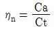
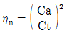
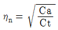
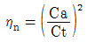
(정답률: 62%)
40. 비열비를 k = Cp/Cv, 폴리트로프 지수를 ｎ이라 할 때 폴리트로프 비열[Cn]은 어떻게 표시되는가?
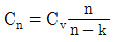
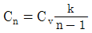
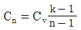
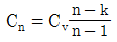
(정답률: 34%)
3과목: 계측방법
41. 열전대의 종류중 상용 사용한도 온도가 200 ∼ 300℃인 열전대로 가장 적합한 것은?
- CC
- PR
- CA
- IC
(정답률: 39%)
42. PR 열전대의 설명으로 옳은 것은?
- 측정 최고온도는 CA 열전대보다 낮다.
- 다른 열전대에 비하여 정밀 측정용에 사용된다.
- 열기전력이 다른 열전대에 비하여 가장 높다.
- 200℃ 이하의 온도측정에 적당하다.
(정답률: 78%)
43. 조절부의 제어동작중 연속식 제어의 기본동작이 아닌 것은?
- 비례동작(P)
- 적분동작(I)
- 미분동작(D)
- ON - OFF동작
(정답률: 86%)
44. 보일러에 가장 기본이 되는 제어는?
- 수치 제어
- 시퀸스 제어
- 피드백 제어
- 자동 조절
(정답률: 59%)
45. 다음 중 목표량과 계측량과의 편차 ε의 크기 및 지속시간과 비례한 제어동작은?
- PID동작
- ON - OFF동작
- PI동작
- P동작
(정답률: 80%)
46. 광고온계의 온도측정 범위는 대략 어느 것인가?
- 100 ∼ 300℃
- 100 ∼ 500℃
- 700 ∼ 2000℃
- 4000 ∼ 5000℃
(정답률: 78%)
47. 그림과 같이 수은을 넣은 차압계를 이용하는 액면계에 있어서 수은면의 높이차가 50.0㎜일 때 상부의 압력 취출구에서 탱크내 액면까지의 높이는 얼마로 되는가? (단, 액의 비중량을 999㎏/m3, 수은의 비중량을 13550㎏/m3으로 한다.)
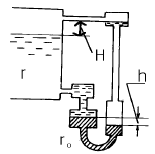
- 508㎜
- 678㎜
- 485㎜
- 494㎜
(정답률: 64%)
48. 전자유량계의 설명 중 틀린 것은?(오류 신고가 접수된 문제입니다. 반드시 정답과 해설을 확인하시기 바랍니다.)
- 압력손실이 없다.
- 고점도 유체 및 슬러리의 유량 측정이 가능하다.
- 쿨롱의 전자유도 법칙을 이용한 것이다.
- 증폭기가 필요하고 값이 비싸다.
(정답률: 7%)
49. 다음 중 동압판 유량계의 평판이 받는 힘을 나타내는 식은?(단, ρ: 유체의 밀도, Q : 유량, v : 유속 이다.)
- f=ρQv
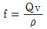
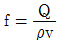
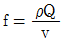
(정답률: 58%)
50. 다음 유량계중 유속을 측정하므로서 간접적으로 유량을 구하는 계기가 아닌 것은?
- 초음파유량계
- 전자유량계
- 휨날개형유량계
- 회전날개형유량계
(정답률: 43%)
51. 링겔만 농도표(Ringelmann smoke chart)에 대한 설명 중 틀린 것은?
- 백지에 검은 선을 그은 것이다.
- 0도에서 5도로 구분된다.
- 측정부 주위의 명암 및 풍양에 따라 오차가 발생함
- 연소상태가 불량하면 2도 이하로 나타난다.
(정답률: 62%)
52. 세라믹식 O2계 가스분석기에 사용되는 세라믹 주원료는?
- K2O
- ZrO2
- Al2O3
- Fe2O3
(정답률: 84%)
53. 광고온계(Optocal Pyrometer)의 특징에 대한 설명중 틀린 것은?
- 방사온도계 보다 방사보정량이 크다.
- 측정시 사람의 손이 필요하다.
- 비접촉법으로는 가장 정확하다.
- 외삽법으로 3000℃까지 측정이 가능하다.
(정답률: 64%)
54. 1500℃의 고온측정에 사용되는 열전대의 재료는?
- 동
- 니켈
- 발코(Balco)
- 백금/백금로듐
(정답률: 90%)
55. 기체 연료의 시험방법중 CO2는 어느 흡수액에 흡수시키는 가?
- 수산화 칼륨 30% 수용액
- 암모니아성 염화 제1동
- 알칼리성 피로갈롤 용액
- 발연 황산액
(정답률: 82%)
56. U자관 마노미터(manometer)가 오리피스미터에 설치되어 있는데 마노미터 밑부분은 비중이 13.6인 수은으로 채워져 있고 수은 윗부분은 비중이 1.6인 유기질 액체로 채워져 있다. 만일 마노미터 눈금의 차이가 200㎜이라고 한다면 압력 차이는 N/m2의 단위로 얼마인가? (단, g/gc = 9.80665m/s2, 물의 밀도 = 1g/cm3)
- 23536N/m2
- 23.536N/m2
- 19876N/m2
- 19.876N/m2
(정답률: 28%)
57. 제어에 대한 다음의 설명중 옳은 것은?
- 1차 제어장치가 제어량을 측정하여 제어명령을 발하고, 2차 제어장치가 이 명령을 바탕으로 제어량을 조절하는 측정제어는 프로그램 제어이다.
- 미리 정해진 순서에 따라 순차적으로 제어의 각 단계를 진행하는 자동제어 방식으로 작동명령은 기동, 정지, 개폐 등과의 타이머, 릴레이등을 이용하여 행하는것을 사이러스 제어라고 한다.
- 제어장치의 조절계의 종류는 공기식, 수증기식, 전기식 등 3가지이다.
- 제어량에서 목표 값을 뺀 값을 제어편차라고 한다.
(정답률: 44%)
58. 개방형 마노미터로 측정한 공기의 압력은 150㎜H2O였다. 공기의 절대압력은 얼마인가?
- 150㎏/m2
- 150㎏/cm2
- 151.033㎏/cm2
- 10480㎏/m2
(정답률: 35%)
59. 유량계 종류중에서 적산식(積算式) 유량계는?
- 용적 유량계
- 차압 유량계
- 면적 유량계
- 동압 유량계
(정답률: 50%)
60. 다음 중 드로틀(throttle)기구에 의하여 유량을 측정하지 않는 유량계는?
- 오리피스
- 벤츄리
- 가스미터
- 노즐
(정답률: 80%)
4과목: 열설비재료 및 관계법규
61. 다음 중 스폴링(spalling)에 대한 설명으로 옳은 것은?
- 마그네시아를 원료로 하는 내화물이 체적변화를 일으켜 노벽이 붕괴하는 현상
- 온도의 급격한 변동으로 내화물에 열응력이 생겨 표면이 갈라지는 현상
- 크롬마그네시아벽돌이 1,600℃이상의 고온에서 산화철을 흡수하여 부풀어 오르는 현상
- 내화물이 화학반응에 의하여 녹아내리는 현상
(정답률: 77%)
62. 에너지이용합리화법 상 다음 내용 중 잘못 설명된 것은?
- 에너지사용자란 에너지 사용시설의 소유자 또는 관리자를 말한다.
- 에너지사용시설이라 함은 에너지를 사용하는 공장∙사업장 기타 시설과 에너지를 전환하여 사용하는 시설을 말한다.
- 에너지공급자라 함은 에너지를 생산∙수입∙전환∙수송∙저장∙판매하는 사업자를 말한다.
- 연료라 함은 석유.석탄.대체에너지 기타 열 등으로 제품의 원료로 사용되는 것을 말한다.
(정답률: 62%)
63. 다음 중 인정검사대상기기조종자의 교육을 이수한 자가조종할 수 있는 검사대상기기가 아닌 것은?
- 출력이 0.58㎿인 온수보일러
- 출력이 0.58㎿인 열매체보일러
- 압력용기
- 최고사용압력이 1.2MPa이고, 전열면적이 10m2인 증기보일러
(정답률: 58%)
64. 땅속에 직접 매설되는 지역난방용 온수배관으로 많이 사용되는 이중보온관(pre-insulated pipe) 공장에서 보온 및 외부보호관까지 일체형으로 제작)에서 주로 사용되는 보온재는?
- 펄라이트
- 염화비닐폼
- 폴리우레탄폼
- 폴리스틸비닐폼
(정답률: 70%)
65. 내화물이 사용중에 균열이 생기거나 표면이 박리되는 현상은?
- 스폴링
- 버스팅
- 연화
- 수화
(정답률: 69%)
66. 다음 중 요로내에서 생성된 연소가스의 흐름에 관한 설명 으로 틀린 것은?
- 가열물의 주변에 저온 가스가 체류하는 것이 좋다.
- 같은 흡입 조건하에서 고온 가스는 천정쪽으로 흐른다.
- 가연성가스를 포함하는 연소가스는 흐르면서 연소가 진행된다.
- 연소가스는 일반적으로 가열실내에 충만되어 흐르는것이 좋다.
(정답률: 75%)
67. 유리섬유 보온재의 최고사용온도는?
- 150℃
- 300℃
- 500℃
- 800℃
(정답률: 60%)
68. 다음 중 에너지절약전문기업이 하는 사업에 해당되지 않는 것은?
- 노후된 보일러 및 산업용 요로 등 에너지다소비설비의 대체
- 대체연료사용을 위한 시설 및 기기류의 설치
- 열병합발전사업
- 에너지절약을 위한 국가 자금의 대출관리
(정답률: 77%)
69. 셔틀요와 관계가 없는 내용은?
- 가마의 보유열보다 대차의 보유열이 열 절약의 요인이 된다.
- 급랭파가 안 생길 정도의 고온에서 제품을 꺼낸다.
- 가마 1개당 2대 이상의 대차가 있어야 한다.
- 가마의 보유열이 제품의 예열에 쓰인다.
(정답률: 45%)
70. 에너지이용합리화법에 따라 에너지총조사는 ( )년을 주기로 하여 실시하되 산업자원부장관이 필요하다고 인정할 때에는 간이조사를 실시할 수 있다. 괄호 안에 알맞는 수치는?
- 1
- 2
- 3
- 5
(정답률: 79%)
71. 길이 7m, 외경 200mm, 내경 190mm의 탄소강관에 360℃ 과 열증기를 통과시키면 이 때 늘어나는 관의 길이는 몇 mm인가? (단, 주위온도는 20℃이고, 관의 선팽창계수는 0.000013이다.)
- 21.15mm
- 25.71mm
- 30.94mm
- 36.48mm
(정답률: 50%)
72. 내화물 SK-26번이면 용융온도 1580℃에 견디어야 한다. SK-30번 이라면 몇 도에 견디어야 하는가?
- 1,460℃
- 1,670℃
- 1,780℃
- 1,800℃
(정답률: 95%)
73. 알루미늄박 보온재는 알루미늄판 또는 박(泊)을 사용하여 공기층을 중첩시킨 것으로서 그 표면은 열복사에 대한 방사능을 이용한 것이며 그 공기층의 두께는 ( )이하일 때 효과가 가장 크다. 괄호안에 알맞은 내용은?
- 5mm
- 10mm
- 20mm
- 50mm
(정답률: 65%)
74. 다음 중 작업이 간편하고 조업주기가 단축되며 요체의 보유열을 이용할 수 있어 경제적인 반 연속식요는?
- 셔틀요
- 윤요
- 터널요
- 도염식요
(정답률: 64%)
75. 그림의 균열로에서 리큐퍼레이터는?
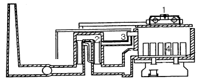
- 1
- 2
- 3
- 4
(정답률: 77%)
76. 다음 중 고압배관용 탄소강 강관(KS-D-3564)의 호칭지름의 기준이 되는 것은?
- 배관의 안지름
- 배관의 바깥지름
- 배관의 (안지름+바깥지름)/2
- 배관나사의 바깥지름
(정답률: 63%)
77. 에너지이용합리화 기본계획 내용이 아닌 것은?
- 에너지 절약형 경제구조로의 전환
- 에너지 이용 효율의 증대
- 에너지 이용 및 수립조정을 위한 에너지 사용량 제한
- 열사용 기자재의 안전관리
(정답률: 48%)
78. 제조업자 또는 수입업자는 시험기관으로부터 등급표시 기자재에 대한 에너지의 소비효율 또는 사용량을 측정받아 측정결과와 등급을 누구에게 통보하여야 하는가?
- 과기부장관
- 산업자원부장관
- 재정경제부장관
- 환경부장관
(정답률: 84%)
79. 금속 등의 내부조직 변화 및 변형을 제거하기 위하여 사용하는 로는 다음 중 어느 것인가?
- 머플요
- 소성로
- 소둔로
- 소결로
(정답률: 36%)
80. 다음 중 국가에너지기본계획에 포함되어야 할 내용이 아닌 것은?
- 에너지이용의 합리화와 이를 통한 온실가스(이산화탄소에 한한다.)의 배출감소를 위한 대책
- 환경친화적 에너지의 이용을 위한 대책
- 에너지 절약형 산업 구조로의 전환
- 국내외 에너지 수급 정세의 추이와 전망
(정답률: 29%)
5과목: 열설비설계
81. 증발량 2ton/h, 최고 사용압력 10㎏/cm2, 급수온도 20℃, 최대 증발율 25㎏/m2h인 원통 보일러에서 평균 증발율을 최대 증발율의 90%로 할 때 평균 증발량(kg/h)은?
- 2100
- 1800
- 1500
- 1200
(정답률: 50%)
82. 그림과 같은 병류형 열교환기에서 적용되는 △Tm에 관한 식은? (단, 하첨자 h : 고온측, 1 : 입구c : 저온측, 2 : 출구)
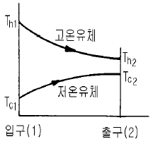
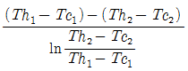
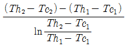
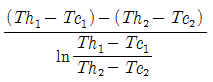
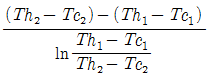
(정답률: 60%)
83. 스테이의 평균피치 75㎜, 관판의 두께 8㎜, C가 2010인 연관보일러 관판의 최고사용압력은 몇 ㎏f/cm2인가?
- 15
- 20
- 23
- 25
(정답률: 18%)
84. 보일러 동체, 드럼 및 일반적인 원통형 고압기의 강도 계산식(두께 계산식)은? (단, t는 원통형 두께, P는 내부 압력, D는 원통 안지름 및 σ는 인장응력(원통 단면의 원형 접선 방향))
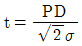
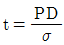
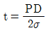
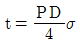
(정답률: 63%)
85. 조건이 아래와 같을 때 보일러 전열면 환산증발율을 구하는 공식은? (단, B : 보일러 전열면 환산 증발율, hx : 증기엔탈피, W : 매시 발생 증기량, S : 보일러 전열면적, he : 보일러 급수의 엔탈피)
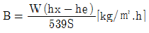
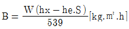
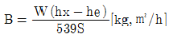
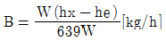
(정답률: 39%)
86. 유속을 일정하게 하고 관의 직경을 2배로 증가시켰을 경우 유량은 어떻게 변화하는가?
- 2배로 증가
- 4배로 증가
- 8배로 증가
- 처음과 동일
(정답률: 71%)
87. 고압 보일러에 관한 설명 중 틀린 것은?
- 자연 순환식 보일러에는 순환력을 증대하기 위하여 고압으로 하여야 한다.
- 고온,고압 보일러 일수록 급수 중의 불순물이 수관에 미치는 영향이 크다.
- 고압으로 됨에 따라 수압을 크게 하여야 한다.
- 고압으로 됨에 따라 포화수와 포화증기의 밀도차가 감소된다.
(정답률: 43%)
88. 피복 아크용접에서 루트의 간격이 크게 되었을 때 보수하는 방법 중 잘못된 것은?
- 맞대기 이음에서 간격이 6mm이하일 때는 이음부의 한쪽 또는 양쪽에 덧붙이를 하고 깍아내어 간격을 맞춘다.
- 맞대기 이음에서 간격이 16mm이상일 때에는 판을 전부 혹은 일부를 바꾼다.
- 필렛 용접에서 간격이 1.5~4.5mm일 때에는 그대로 용접해도 좋지만 벌어진 간격만큼 각장을 작게 한다.
- 필렛 용접에서 간격이 1.5mm이하일 때는 그대로 용접한다.
(정답률: 69%)
89. 열교환기의 효율을 상승시키기 위한 방법으로 틀린 설명은?
- 유체의 흐름의 방향을 병류로 한다.
- 열전도율이 높은 재질을 사용한다.
- 전열면적을 증가한다.
- 유체의 유속을 빠르게 한다.
(정답률: 74%)
90. 저압 및 중압 보일러 수처리의 주요 약제로서 pH를 조절하여 스케일을 방지하는데 주로 사용되는 것은?
- 히드라진
- 인산소다
- 암모니아
- 가성소다
(정답률: 27%)
91. 다음 보일러 부속장치와 연소가스의 접촉과정을 나타낸 것으로 가장 적합한 것은?
- 과열기 → 공기예열기 → 절탄기
- 절탄기 → 공기예열기 → 과열기
- 과열기 → 절탄기 → 공기예열기
- 공기예열기 → 절탄기 → 과열기
(정답률: 69%)
92. 다음 중 보일러 가동시 환경오염에 문제가 되는 매연이 발생하게 되는 원인으로 볼 수 없는 것은?
- 연소실 용적이 작을 때
- 연소실 온도가 높을 때
- 무리하게 연소하였을 때
- 통풍력이 부족하거나 과대할 때
(정답률: 70%)
93. 강판의 두께 12㎜, 리벳의 직경 22.2㎜, 피치 48㎜의 1줄 겹치기 리벳 조인트가 있다. 1피치당 하중을 1200㎏이라 할 때 리벳에 생기는 전단응력은 얼마인가?
- 3.1㎏/mm2
- 16.3㎏/mm2
- 34.5㎏mm2
- 53.0㎏/mm2
(정답률: 29%)
94. 건조기의 열효율 표시를 옳게 나타낸 것은? (단, Q : 입열량, q1 : 수분 증발에 소비된 열량, q2 : 재료 가열에 소비된 열량, q3 : 건조기의 손실 열량)
- q1/Q
- q2/Q
- (q1 + q2)/Q
- (q1 + q2 + q3 )/Q
(정답률: 57%)
95. EPM(Equivalent Per Million)이란 무엇인가?
- 물 1L에 함유되어 있는 불순물의 양을 mg으로 나타낸것
- 물 1 ton중에 함유되어 있는 불순물의 양을 mg으로 나타낸 것
- 물 1L 중에 용해되어 있는 물질을 mg 당량수로 나타낸 것
- 물 1 gallon중에 함유된 grain의 양을 나타낸 것
(정답률: 63%)
96. 어느 가열로에서 노벽의 상태가 아래와 같을 때 노벽을 관류하는 열량은 얼마인가? (단, 노벽의 상하 및 둘레가 균일한 것으로 본다.)
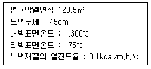
- 30,125kcal/h
- 301.25kcal/h
- 39,497kcal/h
- 394.97kcal/h
(정답률: 27%)
97. 보일러의 스테이를 수리.변경하였을 경우 실시하는 검사에 적합한 용어는?
- 설치 검사
- 대체 검사
- 개체 검사
- 개조 검사
(정답률: 60%)
98. 파이프의 내경 D(mm)는 유량 Q(m3/s)와 평균속도 V(㎧)로 표시될 때 다음 식중 옳은 것은?
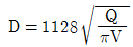
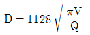
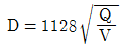
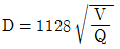
(정답률: 54%)
99. 원수(原水) 중의 용존 산소를 제거할 목적으로 사용하는 탈산소 방법이 아닌 것은?
- 탈기기
- 히드라진
- 아황산나트륨
- 기폭장치
(정답률: 48%)
100. 다음 설명 중 옳지 못한 것은?
- Nusselt수는 대류 열전달 계수와 관계가 있다.
- Prandtl수는 점성계수와 관계가 있다.
- Reynolds수는 층류 및 난류와 관계가 있다.
- Stanton수는 열전도 계수와 관계가 있다.
(정답률: 50%)